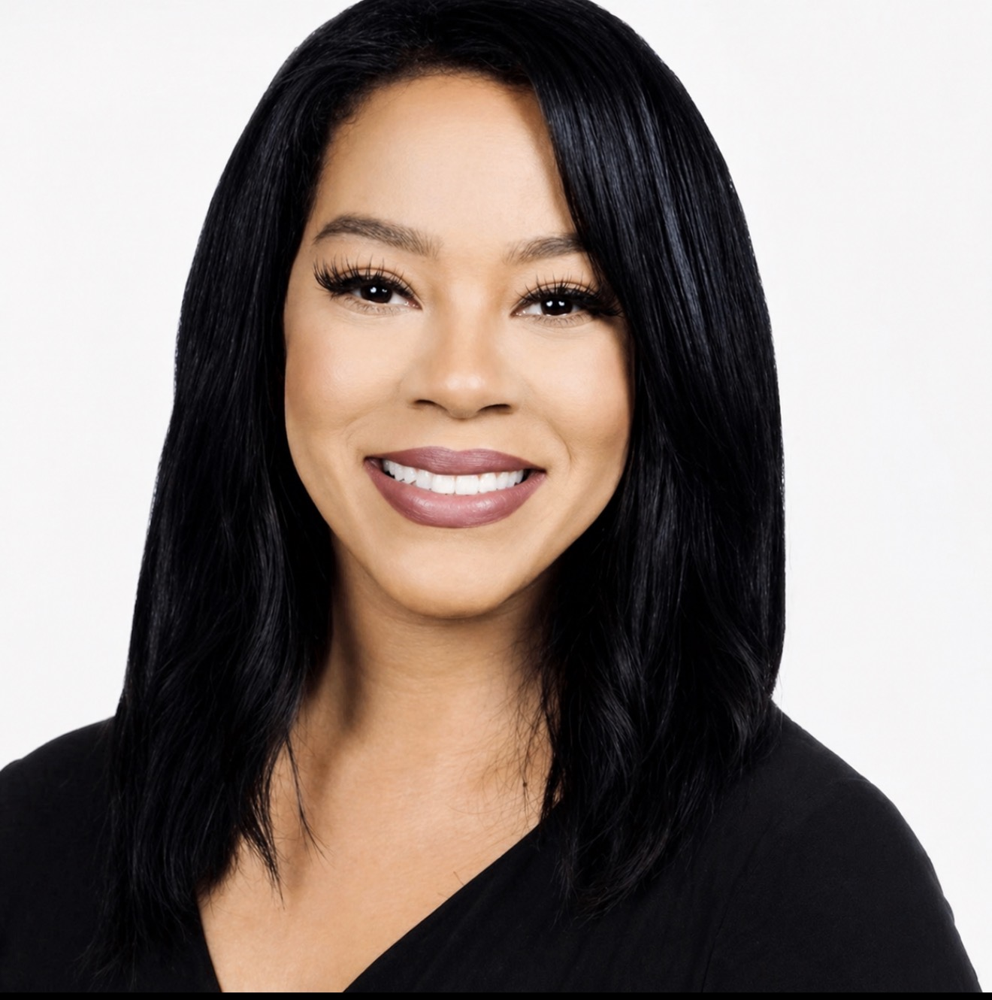

Executive communications advisor specializing in stakeholder engagement, crisis communications and strategic narrative development in high-visibility environments.
Former executive communications director. Former broadcast journalist. Regulatory communications specialist.
Executive communications leader with more than 10 years of experience advising organizations in high-visibility, regulated environments. Trusted advisor to executive leadership with expertise in media strategy, crisis communications, stakeholder engagement and reputation management.
Background in broadcast journalism and public communications with experience supporting complex organizations in managing risk, aligning messaging and strengthening institutional trust.
Shaping narrative positioning for public visibility and stakeholder trust.
Rapid response communication during high-risk and high-visibility events.
Strategic counsel for leadership messaging and organizational positioning.
Alignment of messaging across agencies, partners and regulatory bodies.
Background in broadcast journalism with experience covering breaking news, crisis events and high-impact public stories. This experience informs executive communications strategy and crisis advisory work.
Advisory engagements are structured based on scope, urgency and organizational needs. Support is tailored for executive communications strategy, crisis response and stakeholder engagement in high-visibility environments.
Fees are determined by scope and organizational needs and are provided upon consultation.
Available for executive advisory, crisis communications and strategic stakeholder engagement.
For advisory inquiries, please reach out via email. All engagements begin with an initial consultation to determine scope and alignment.
Email: porshariley2@gmail.com